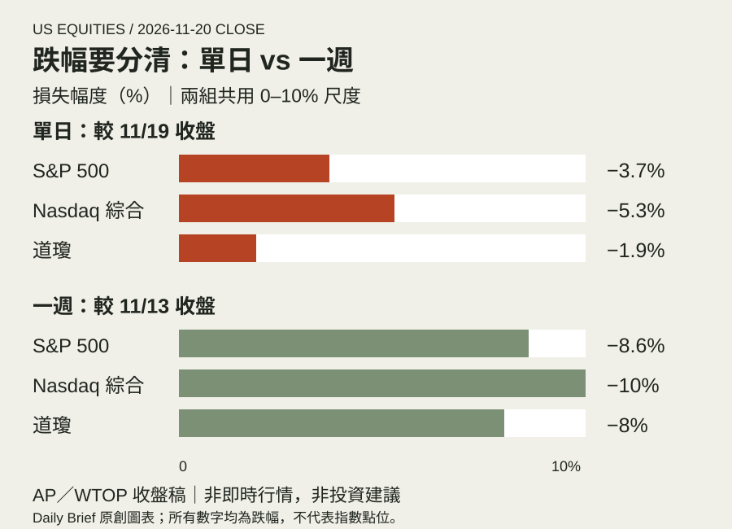

MARKETS / THE ESSENTIALS
美股正式收盤確認：S&P 500 跌 3.7%，Nasdaq 一週跌 10%
收錄於 2026-11-22 日報 · Associated Press 收盤原稿／WTOP 授權轉載
發生什麼事
- AP 收盤報告確認，美東 11 月 20 日交易日：S&P 500 收 6,910.39 點、較前日跌 3.7%；Nasdaq 綜合收 22,617.73、跌 5.3%；道瓊收 48,147.33、跌 1.9%。這是已結束的週五交易，不是週末新交易。
- 以 11 月 13 日收盤為週比較基準，S&P 500 跌 8.6%、Nasdaq 跌 10%、道瓊跌 8%。AP 將賣壓聚焦 AI 類股；S&P 500 較 10 月 6 日高點已跌逾 10%，Nasdaq 全年變為跌 2.7%。
影響與限制
- 跌勢已從盤中警訊成為正式收盤及跨週損失，集中投資的波動風險更明顯。 AI 類股賣壓是報導歸因，非已證明的唯一因果；不預測反彈或底部，不提供買賣指令。
後續更新：前期尚未核實美股較晚行情；本次補足 11 月 20 日正式收盤、單週損失與全年比較，確認 S&P 500 進入修正區間。

原文與查核
以上為整理與解讀，重要細節請回到原文核對。
- Associated Press 收盤原稿／WTOP 授權轉載 ↗發布 2026-11-20 · 查核 2026-11-22T05:09:18+08:00